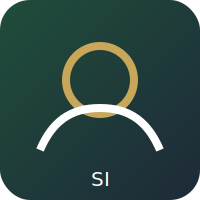

Skip to content

Saadi Institute
☰
درباره ما
اهداف و چشمانداز
حوزههای فعالیت
پل فرهنگی
اطلاعات و تماس
FA
DE
EN
دانلودها
Brochure (PDF)
1.2 MB · 2026-01-10
Download
Course outline (PDF)
0.8 MB · 2026-01-12
Download
Annual report (PDF)
2.4 MB · 2026-01-15
Download